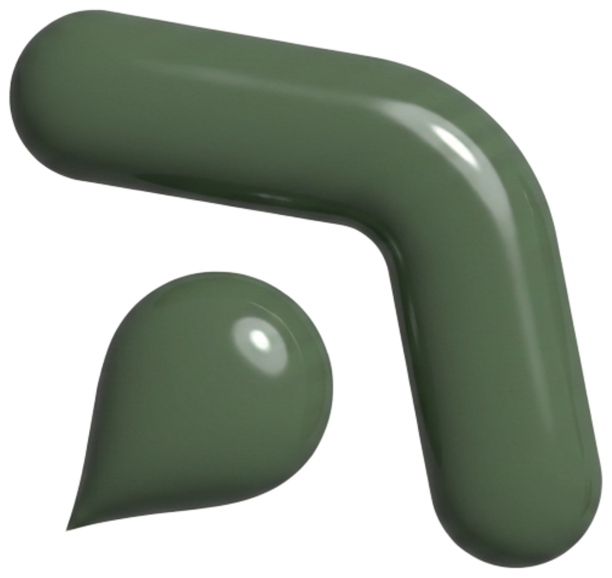

Códice
da Marca
O livro dos porquês. Não como usar a marca — mas por que ela é assim.
Três sobrenomes,
uma palavra.
Antes de ser uma empresa, Opp foi um acordo entre gente. O nome guarda, letra por letra, quem começou.
Três famílias, uma missão: gerar vida no trato agrícola da terra. Uma parceria antiga — de trabalho e de confiança — que só depois virou papel, por exigência da lei. O nome nasceu do vínculo, não do contrato.
Trazer mais
para poder fazer mais.
O + não é enfeite. Não é sinal de marketing, nem “mais” de quantidade. Ele nasceu de um sentimento — e talvez por isso tenha ficado tão certo.
No começo, a visão era atender só os sócios. Mas a Opp faz coisa boa — e coisa boa pede para ser dividida. A régua virou: se ajudamos os nossos, por que parar nos nossos?
O + são os que chegam depois dos fundadores — e que também entram com gente junto. É a porta que a parceria deixou aberta.
E há ainda o + que se soma a cada promessa — o que a marca entrega além do combinado:

as asas a gotaA gota
que sobe.
Acima, as asas estilizadas do avião — um traço que lembra um bumerangue. À primeira vista, é aviação pura: as asas que sobrevoam a lavoura.
Mas para quem conhece o abraço do ícone do Grupo Opp+, as asas ganham outra leitura: braços abertos, voltados ao cuidado da lavoura e à vida que o manejo agrícola faz nascer.
Abaixo, a gota. Repare na direção: ela aponta para cima, nunca caindo. O alvo mais difícil da aplicação é o dorso da folha — a face de baixo, escondida. A gota ascendente é essa busca: mirar no que é difícil, e acertar.
Um abraço de
quatro braços.
Quatro braços entrelaçados, como quem se abraça. Três em verde — as famílias fundadoras. E um em cinza, um pouco mais recuado.
O cinza não é submissão. É o parceiro que integra o grupo sem ser sócio — de dentro, mas com o seu próprio lugar. Esse braço cinza é o “+” em forma de gesto. Ele é intencional; nunca deve ser removido nem nivelado.
No centro, a cabeça em degradê: a administração que costura tudo, o ponto onde os braços se encontram.
A voz visual.
O verde não é qualquer verde. É o verde escuro acinzentado da lavoura madura — sério, enraizado, sem estridência. A ele se somam os verdes de ação, para quando a marca precisa se mover.
Trabalho que atravessa
safras e gerações.
Este códice não ensina a usar a marca. Ele lembra por que ela merece ser bem usada.